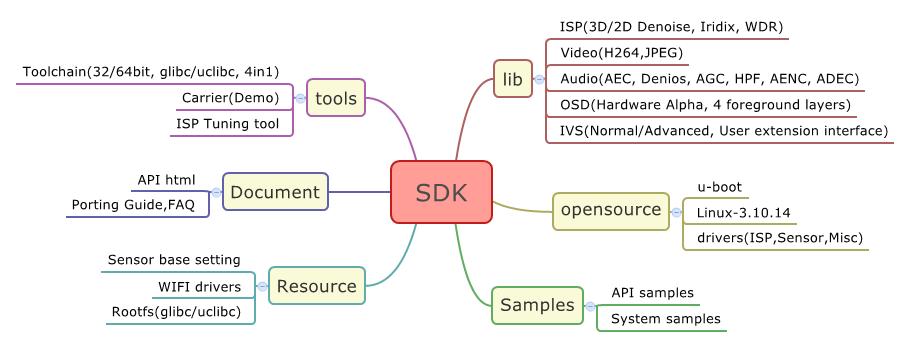
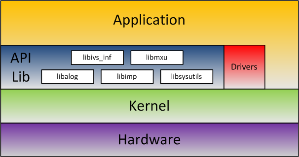

1. ISVP SDK简介
ISVP SDK，即软件开发工具包，包括API库、开源源码、文档、Samples等等。开发者可以通过SDK快速的开展产品功能开发。以下是ISVP SDK的内容概览图：

具体内容如下：
1.1 应用库
1.1.1 imp库
- System——实现模块间的数据和系统控制功能
- ISP——图像信号处理单元。包括WDR，3D-Denoise和Iridix等功能
- FrameSource——视频源。输出ISP处理后的原始视频
- Encoder——编码器，实现H264和JPEG编码
- Audio——音频模块，包括录放音，音量调节，音频编码，回音消除等功能
- OSD——视频叠加，实现字符点阵叠加的功能
- IVS——智能分析，包括IVS通道管理，移动侦测功能
1.1.2 sysutils库
- su_base——基础功能，包括关机、重启、获取RTC时间等
- su_cipher——数据加解密模块
- su_adc——数模转换数据读取接口
- su_misc——其他功能，包括获取按键事件等
1.2 开源代码
1.2.1 u-boot与Linux内核
- u-boot基于2013.07版本，支持常用的网络、Nor Flash操作以及TF卡，Fat文件系统操作
- Linux Kernel版本为3.10.14，支持常用的总线驱动。开发者可直接编译使用或者进行拓展开发
1.2.2 drivers
- ISP & Sensor driver. 支持Sensor探测识别
- EEPROM driver, Timer driver等系统驱动
2. 系统结构
ISVP-SDK的系统结构如下图所示：

在上图中，系统的各层依次为:
- Hardware: 硬件层，完成I/O等具体的硬件功能。
- Linux Kernel: 内核层。完成基础的系统功能，定义硬件资源
- drivers: ko模块驱动，可通过driver进行硬件操作
- API lib: 接口库，实现硬件功能的抽象，方便于应用层的开发。API库主要有五部分：
- libimp: 多媒体功能库。如H264编码，JPEG编码，IVS和Audio等
- libsysutils: 系统功能库。如重启，设置系统时间和电池功能等
- libalog: ISVP-SDK的log实现库
- libivs_inf: IVS算法库，包括人脸检测，人形检测，周界防范等
- libmxu: 128位SIMD加速指令算子库
- Application: 应用层。实现功能逻辑等
- Application推荐使用SDK库提供的API及配合drivers进行开发。对于一些特殊的功能需求，也可以直接调用内核接口进行开发
3. SDK版本号定义
SDK的版本号的格式为“x.y.z”。其意义分别为：
- x：当SDK有较大结构性变动时更新
- y：当API有更新时更新
- z：API没有更新但是API内部实现有更新时更新
当发生x，y版本变化时，需要开发者更新API头文件，否则可能出现数据结构不匹配，造成未知的错误。
 1.8.8
1.8.8